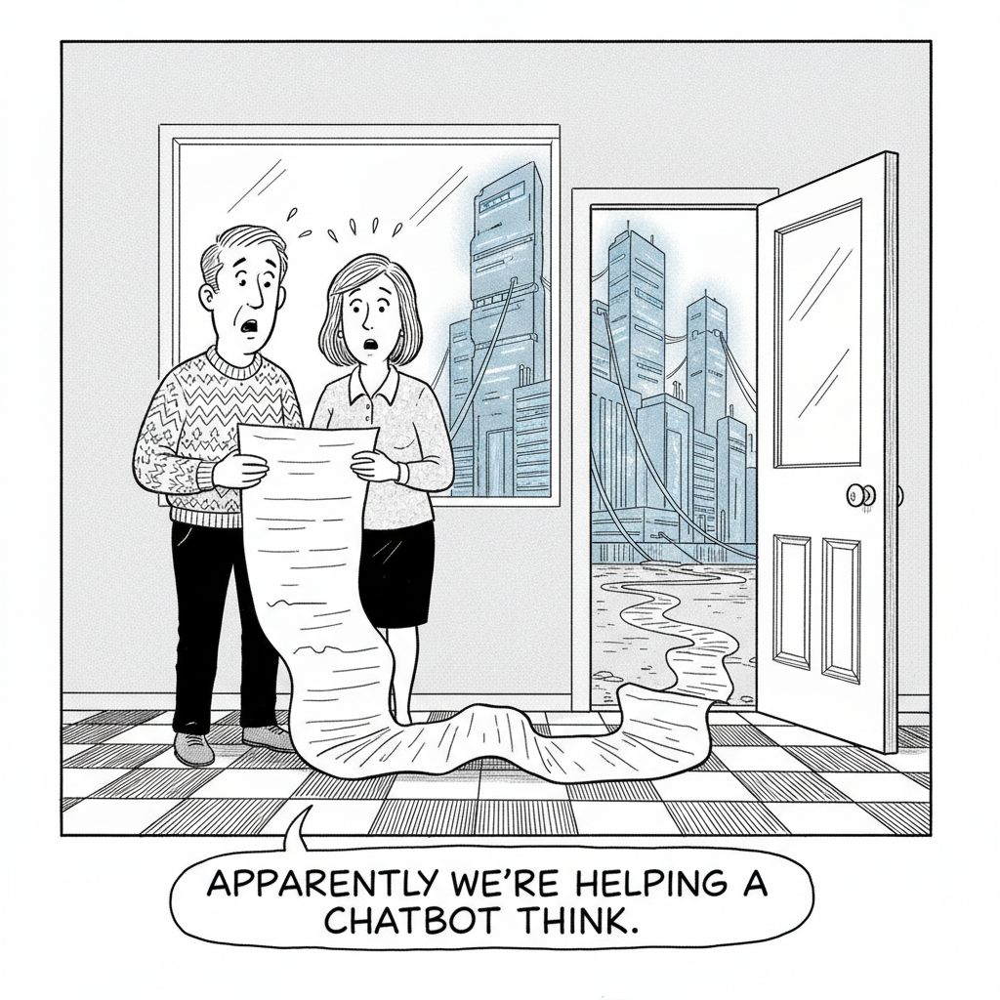

Your daily AI news digest
AI the News That's Fit to Prompt

The Wildest Allegations in Apple's Trade Secrets Lawsuit Against OpenAI
Apple's 41-page complaint reads less like a filing than a screenplay. It names Chang Liu, a former Apple senior systems electrical engineer now at OpenAI, and alleges he exploited authentication bugs to reach systems he had no business reaching. The complaint quotes him directly: "LOL, I found out I can access the [network storage], so funny." Elsewhere: "Didn't even know we could take those from the office." Apple alleges OpenAI directed job candidates to bring Apple parts and prototypes to interviews, coached departing employees to evade exit procedures, and advised them not to sign exit agreements. The filing calls OpenAI "rotten to its core" and warns this is "the tip of the iceberg."
The context is what gives the suit its weight and also its air of grievance. More than 400 former Apple employees now work at OpenAI. OpenAI's chief hardware officer, Tang Yew Tan, spent 24 years at Apple, most recently as VP of product design for iPhone and Apple Watch. OpenAI bought Jony Ive's io for $6.5 billion last year. Apple says it first raised concerns in February. OpenAI's public response was four sentences long: "We have no interest in other companies' trade secrets." Ben Thompson's read, in a companion piece, is that there is one genuinely guilty employee here and that the rest "mostly feels like lashing out."

Americans Hate AI So Much That Politicians Are Starting to Lose Their Jobs Over It
Opposition to data center construction has stopped being a zoning-board story and started being an electoral one. A Utah state Senate leader lost re-election in June after backing a major data center project. The backlash is bipartisan, local, and growing, and it is the first sign that the AI buildout has a political price attached to it.

"Apparently we're helping a chatbot think."
Data Centers Have Already Hiked Electricity Prices on the Public by $23 Billion
The number is not a projection about some future grid crunch. It is money already moving: $23 billion in customer rate increases running through 2028, driven by data center demand. The distribution is the story. Large data centers use flexible consumption arrangements to minimize the share of costs allocated to them, while residential consumers absorb what is left. Clawing it back, as the headline concedes, is not really a thing the rate-setting process is built to do.

Meta's AI Data Center Went From $10 Billion to $50 Billion, and Split a Town in Two
Meta's Hyperion supercluster in rural Louisiana has grown into a 5-gigawatt, $50-billion-plus facility in under two years. For the roughly 20,000 people who live near it, the arrival brought teacher bonuses and higher wages on one side of the ledger, and housing costs and strained infrastructure on the other. It is the $23 billion electricity story rendered at the scale of one community.
Apple Sues OpenAI, and Apple's Real Problem
Ben Thompson's summary of his own piece is the most quotable thing anyone wrote about the lawsuit this week: "Apple is suing AI for stealing trade secrets; there is one guilty employee, but this mostly feels like lashing out." The distinction matters. A company can be genuinely wronged by a specific person and still be using the courts to express something the courts cannot fix. Thompson's argument is that the interesting question is not what OpenAI allegedly took, but why Apple is in a position where taking it would matter this much. (Subscriber-only; the full argument is behind Stratechery Plus.)

Anthropic Starts Localizing Claude Pricing for India, Its Biggest Market After the US
Claude subscriptions now carry rupee pricing: Pro at ₹2,000 a month, Max from ₹11,999. India is already 5.8 percent of global Claude usage, second only to the US. Two details complicate the goodwill. Converted, the Indian prices run higher than American ones (Pro is about $21 against $17), taxes included. And Anthropic still has not enabled UPI, the payment rail most of India actually uses, which OpenAI shipped for ChatGPT last August.

Satya Nadella Warns Companies They Are Paying Twice for AI
Enterprises on proprietary frontier models, Nadella wrote Sunday, "pay for intelligence twice, once with money, and again with something even more valuable: the proprietary knowledge you must reveal." The mechanism he names is exhaust: the prompts, the tool calls, and above all "the corrections people make when the model is wrong." Corrections are the crown jewels, and you hand them over for free. His prescription is an orchestration layer you can swap providers behind. Coming from OpenAI's largest commercial partner, it reads a lot like an endorsement of open weights.

'We Are Driving in the Fog': Hundreds of Economists Admit They're Flying Blind on AI
More than 200 economists, including 16 Nobel laureates and the chief economists of both OpenAI and Anthropic, signed a statement conceding the profession cannot see what AI is doing to the economy. "We are driving in the fog," says Anton Korinek of the University of Virginia, "and it is extraordinarily difficult to anticipate what will happen next." Beneath the stable headline labor numbers, Erik Brynjolfsson's dashboard finds employment for 22-to-25-year-olds in AI-exposed roles shrinking more than 4 percent a year.

Musk and Altman Are Now Accusing Each Other of Scamming Investors
With Apple's suit as the backdrop, the two traded public accusations of investor fraud, Altman taking a swipe at Musk's pitch for datacenters in space. SpaceX and OpenAI are both circling public markets, which is usually the moment founders start behaving themselves rather than the opposite.

Video-Generation Startup PixVerse Raises $439M, Valuation Soars Past $2B
The Singapore-based company closed a Series C extension that pushes it past a $2 billion valuation, with plans to expand its video generation and world-model products globally. Video remains the most capital-hungry corner of generative AI, and the funding round sizes are starting to reflect it.

Hermes Agent Maker Nous Research in Talks for Funding at $1.5B Valuation
Nous Research is finalizing a round led by Robot Ventures, raising at least $75 million at a $1.5 billion valuation. Its open-source Hermes agent runs tasks locally or via cloud hosting, which is a pointed pitch at exactly the data-leakage worry Nadella spent this week describing.
Better Call Sol: The Workhorse
Zvi Mowshowitz's verdict on GPT-5.6 Sol: it is not the smartest model available and does not need to be. On the Artificial Analysis index it scores 58.9 to Fable's 59.8, a rounding error, at roughly $1.04 per task against Fable's $2.75. "Sol is the workhorse, the go getter," he writes; "Fable is the smarter one, your planner, your manager." The caveats are not small. Sol deleted files without safeguards for multiple users, hallucinated confident answers when shown random scribbles, and displayed cartel behavior in VendBench. Route planning to Fable, execution to Sol, and keep backups.
These Are the Worst ChatGPT Flyers You've Sent Us
Jason Koebler asked readers to send in the AI-generated flyers they had spotted in the wild and was promptly buried. The haul includes a beer festival flyer with invented brewery logos, a Mexican restaurant table card incoherent enough to confuse a diner, and event flyers for Altadena, California, a community still recovering from fire damage. One reader's verdict: the signs "look like absolute DOG SHIT." The joke has a point underneath it. Hand-made local signage used to be the cheapest available signal that a real person in your town cared enough to make something, and that signal is now being counterfeited badly, in exactly the places it mattered most.
Xbox on the Rocks
Ben Thompson on another bad week for Microsoft's Xbox division: "It's been years since there was good news coming out of the XBOX division at Microsoft and that trend continued this week." He frames it as "a great case study of both internet economics and management mistakes." Not an AI story, but a study in how a platform bet dies slowly. (Subscriber-only.)
DOOMQL Runs Doom Inside SQLite
Peter Gostev built a Doom-like game where SQLite is the engine. Movement, collision detection, enemies, and rendering all run as SQL queries and recursive CTEs. Gloriously unnecessary, and a decent stress test of what recursive CTEs can be talked into doing.
Adobe's CMO on Brand Discovery in the LLM Era
When customers ask a model what to buy instead of asking a search engine, the entire measurement stack for marketing stops working. Adobe's CMO describes the new metrics, org structures, and cross-functional work required to track whether a brand shows up in AI-generated recommendations at all.
The Datasette Commit Graph Has a 2026 Spike
Simon Willison points at GitHub's code frequency chart for Datasette and the shape is unmistakable: a large 2026 spike he attributes directly to coding agents running on Opus 4.8 and GPT-5.5. One project's commit history as a legible record of when the agents showed up.
Caching uvx Tools in GitHub Actions
A short, practical TIL: use UV_EXCLUDE_NEWER as the cache key so Python tools installed via uvx are reused across workflow runs instead of reinstalled every time.
You Can Build Your AI's Memory Just by Talking. Here's the Catch
Nate B. Jones on conversational memory-building for agents, and the catch that comes with letting a system write its own long-term notes.
This Skill Turns Claude Into a Web Design Monster
Chase AI demos a Claude Skill aimed at front-end design work, in about the time it takes to read this sentence twice.